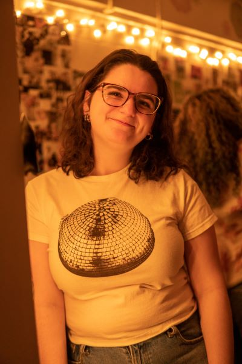

I am a junior English major at the University of Massachusetts Amherst. I am also a persuing a certificate in professional writing and technical communication and a minor in business.
While studying English, I am also apart of UMass' newspaper, the Daily Collegian. I am Collegian Staff and my main focus is the Arts Section of the paper. I have written countless pieces talking about movies, books, tv shows, documentaries, and music. The analytical pieces I write for my English classes on classic literature help hone my ability to make me a skilled writer at the Collegian where I analyze popular media.
I am also the Assistant Head Editor of the Critisism and Nonfiction team of the English department's literary magazine, Jabberwocky. Jabberwocky gives me the ability to express my passion for the publishing industry. Every semester, my team receives about 40 submissions, ranging from creative nonfiction to analyzing movies and literature, where we are in charge of choosing which pieces will be published.
To learn more about me, visit my LinkedIn profile or you can reach me at mdecarlo@umass.edu